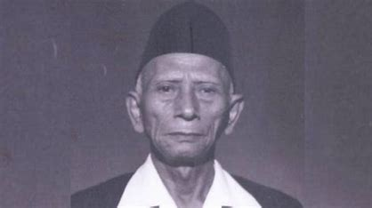

Selamat datang di situs resmi Universitas Kyai Haji Wahab Hasbullah (UNWAHA)! Kami adalah
perguruan tinggi yang berkomitmen untuk menghasilkan lulusan berkualitas, berwawasan global, dan memiliki
akhlak
mulia sesuai dengan nilai-nilai Islam.
Sejarah Singkat
Didirikan untuk mengenang jasa dan semangat perjuangan KH. Wahab Hasbullah, UNWAHA menjadi simbol dedikasi
kami
terhadap pendidikan Islam yang berkualitas dan relevan dengan perkembangan zaman. Dengan lingkungan akademik
yang kondusif, kami menyediakan pendidikan yang menjunjung tinggi nilai-nilai kemandirian, kerja keras, dan
kebersamaan.
 Kh. Abd. Wahab Hasbullah
Tentang Kami
Universitas Kyai Haji Wahab Hasbullah (UNWAHA) adalah institusi pendidikan tinggi berbasis Islam yang
terletak
di Jombang, Jawa Timur. Kami berkomitmen untuk menjadi universitas Islam terkemuka, berorientasi pada
pengembangan ilmu pengetahuan, teknologi, dan seni yang relevan dengan kebutuhan masyarakat global.
Kenapa Memilih UNWAHA?
Lingkungan belajar yang islami dan modern.
Program studi yang beragam dan relevan.
Fasilitas lengkap untuk mendukung kegiatan akademik dan non-akademik.
Dosen dan tenaga pengajar berkualitas tinggi.
Layanan Kami
Kami menyediakan berbagai layanan untuk mendukung mahasiswa dan masyarakat, antara lain:
Layanan Akademik: Sistem informasi akademik (SIA), perpustakaan digital, dan konseling
akademik.
Layanan Mahasiswa: Beasiswa, unit kegiatan mahasiswa (UKM), dan program pengembangan
karir.
Layanan Publik: Pelatihan berbasis komunitas, seminar, dan kegiatan sosial berbasis
Islam.
Fasilitas: Asrama mahasiswa, laboratorium modern, dan pusat olahraga.
UNWAHA juga memiliki pusat layanan inovasi untuk mendukung penelitian dan pengembangan teknologi bagi
masyarakat.
Kontak Kami
Berita Terkini
UNWAHA Meraih Penghargaan Kampus Berbasis Inovasi 2024
Universitas Kyai Haji Wahab Hasbullah baru saja meraih penghargaan bergengsi sebagai Kampus Berbasis
Inovasi di ajang Penghargaan Pendidikan Nasional 2024. Prestasi ini adalah bukti komitmen UNWAHA
dalam
menghadirkan pendidikan inovatif dan relevan dengan perkembangan zaman.